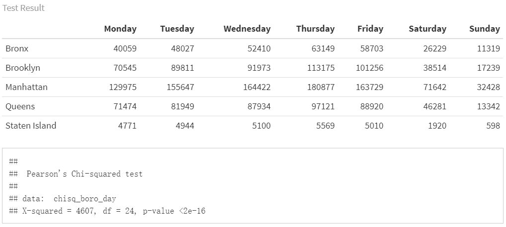
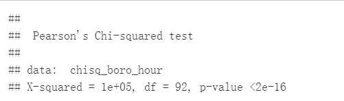

Project Report
Motivation
If you live in NYC, you might encounter this awkward situation someday:
You temporarily parked in front of your office building to buy a cup of coffee in a side-walk cafe. A parking ticket warrior walked to your car, raised her scanner, and fired an invisible beam of light at your registration. She handed you a NYC parking ticket and that beam of light cost you $115.
According to statistics, New Yorkers drink 6.7 times the amount of coffee compared to average, and the average price consumers are paying for a cup of coffee is $2.99, but consider the above, we might have pay way more than few bucks for the coffee.
This is also hot topic on twitter

related work
The following resources are a sample of what inspired this project:
1.The Real Cost of Parking Tickets: 16 U.S. Cities Make Over $1.4 Billion in Annual Parking Ticket Revenue. link
2.Red Zone, Blue Zone: Discovering Parking Ticket Trends in New York City. link
Questions
At very first, we wanted to focus on the parking tickets rate and coffee shops, with the assumption that in the locations where registered coffee shops are nearby, the overall parking tickets would be more than other locations. Also, the total fine amount of parking tickets would be significant in these areas. After deep dive into the dataset, our questions extended more to the characteristics of the parking tickets issued in 2021.
1. Is there any relationship between coffee shop and parking tickets rate?
2. Was the total parking tickets fine amount within 100 meters of coffee shops higher?
3. How have the distribution of parking tickets rate vary across the year of 2021? And was there any pattern for the tickets rate to change within one day and one week?
4. How was the geographic distribution of parking tickets in NYC? Are the tickets rate change with the same pattern in all the five boroughs?
5. What are the most commonly issured parking tickets type? Are they being different in different boroughs?
Data
Data Sorce
All data was downloaded from NYC Open Data.
- For parking violation information:
Parking Violations Issued - Fiscal Year 2021
This dataset contains 380 million violations issued during the 2021 fiscal year.Data is provided by the Department of Finance (DOF).Each record represents a single violation issued. Information on summond number, issue date, violation code and issue street, house number,ect. are recorded. The Issuance datasets are not updated to reflect violation status, the information only represents the violation(s) at the time they are issued.
A ParkingViolation Code excel is attached to this dataset, which records corresponding violation information of each violation code.
- For café in NYC:
Sidewalk Café Licenses and Applications
This dataset features detailed information about sidewalk café license applications and, if applicable, issued licenses. Data is provided by the Department of Consumer Affairs (DCA). There are total of 1124 cafe information,each record represents a single sidewalk café. Location information, such as street number and house humber are recorded.
Data Processing and Cleaning
We set NYC Open Data as primary data source, and required:
- Parking Violations Issued - Fiscal Year 2021
- Sidewalk Café Licenses and Applications
First we focus on acquiring our own geographic information via available information in the datasets.
We wrote a function to pull geographic information from Geosearch. We got longitude and latitude information of each violation through that function and will write them in our resulting dataset.
###select variables we need
data_2021 =
read_csv("./data/Parking_Violations_Issued_-_Fiscal_Year_2021.csv") %>%
janitor::clean_names() %>%
mutate(
borough =
case_when(
violation_county %in% c("BK", "K") ~ "Brooklyn",
violation_county %in% c("MN", "NY") ~ "Manhattan",
violation_county %in% c("Q", "QN") ~ "Queens",
violation_county %in% c("BX") ~ "Bronx"
),
borough = replace_na(borough, "Staten Island")
) %>%
select(
summons_number,
issue_date,
house_number,
street_name,
intersecting_street,
violation_time,
violation_code
violation_code,
borough
)
###pull out house number(without NA) +street number
park21house_geo_df =
data_2021 %>%
subset(select = c(house_number, street_name)) %>%
drop_na(house_number) %>%
unite("address",
house_number:street_name,
sep = ",",
remove = FALSE) %>%
distinct(address, .keep_all = TRUE) %>%
rowid_to_column("id")
###pull out street number +intersect street(without NA)
park21sec_geo_df =
data_2021 %>%
subset(select = c(house_number, street_name, intersecting_street)) %>%
mutate(house_number = replace_na(house_number, "0")) %>%
filter(house_number == "0") %>%
drop_na(intersecting_street) %>%
unite("address",
street_name:intersecting_street,
sep = ",",
remove = FALSE) %>%
distinct(address, .keep_all = TRUE) %>%
rowid_to_column("id") %>%
select(-house_number)
get_location =
function(location_name = "Columbia University",
.pd = NA) {
if (!is.na(.pd)) {
.pd$tick()$print()
}
location_name = str_c(
"https://geosearch.planninglabs.nyc/v1/search?text=",
location_name,
", New York, NY&size=2"
)
url =
URLencode(location_name)
df = read_sf(GET(url) %>% content("text"))
if (nrow(df) == 0) {
return(tibble(
long = NA,
lat = NA,
borough = NA
))
}
geometry = df %>%
pull(geometry) %>%
as.tibble() %>%
mutate(geometry = as.character(geometry),
geometry = str_replace_all(geometry, "c|[\\(\\)]", "")) %>%
separate(geometry, into = c("long", "lat"), sep = ",") %>%
mutate_all(as.numeric) %>%
summarise(long = mean(long),
lat = mean(lat)) %>%
mutate(borough =
df %>%
slice(1)
%>% pull(borough))
return(geometry)
}
if (!file.exists("data/house_no_dic.csv")){
if (nrow("data/cache.csv")==0){
write_csv(tibble(id = NA),"data/cache.csv")
}
while (T) {
output = list()
doit = function(output, i) {
cat(i, "\n")
pb = progress_estimated(length((1 + 500 * (i - 1)):500 * i))
output[[i]] = park21house_geo_df %>%
#arrange(desc(id)) %>%
slice((1 + 500 * (i - 1)):500 * i) %>%
mutate(geo = map(.x = address, ~ get_location(.x, pb))) %>%
unnest(geo)
return(output[[i]])
}
for (i in 1:nrow(park21house_geo_df) %/% 500 + 1) {
park21house_geo_df =
park21house_geo_df %>%
filter(!id %in% pull(read_csv(here::here(
"data/cache.csv"
)), id))
if (length(output) >= i) {
if (!is.null(output[[i]])) {
next
}
}
output[[i]] = tryCatch(
doit(output, i),
error = function(cond)
return(NULL),
T
)
output %>%
bind_rows() %>%
bind_rows(read_csv(here::here("data/cache.csv"))) %>%
select(id:borough) %>%
write_csv(here::here("data/cache.csv"))
output = list()
}
if (i == nrow(park21house_geo_df) %/% 500 + 1) {
park21house_geo_df = bind_rows(output)
break
}
}
st =
read_csv(here::here("data/Centerline.csv")) %>%
janitor::clean_names() %>%
select(street_name = full_stree, geom = the_geom) %>%
mutate(
geom = str_extract_all(geom, "\\-.+,"),
geom = str_split(geom, ",\\s?"),
geom = map(geom, vec_to_df)
) %>%
unnest(geom) %>%
separate(geo, into = c("long", "lat"), sep = " ") %>%
drop_na() %>%
mutate(across(c(long, lat), as.numeric))
street_intersect =
function(street_1, street_2, .pd = NULL) {
if (!is.na(.pd)) {
.pd$tick()$print()
}
street_1_df =
st %>%
filter(
street_name ==
agrep(
street_1,
st %>% pull(street_name),
value = T,
max = list(del = 0.4),
ignore.case = T
) %>% first()
) %>%
select(x = long, y = lat)
street_2_df =
st %>%
filter(
street_name ==
agrep(
street_2,
st %>% pull(street_name),
value = T,
max = list(del = 0.4),
ignore.case = T
) %>% first()
) %>%
select(x = long, y = lat)
answer = tryCatch(
curve_intersect(street_1_df, street_2_df) %>% bind_rows(),
error = function(cond)
return(tibble(x = NA, y = NA)),
T
)
return(answer)
}
pb = progress_estimated(nrow(park21sec_geo_df))
park21sec_geo_df =
park21sec_geo_df %>%
mutate(geo = map2(.x = street_name,
.y = intersecting_street,
~ street_intersect(.x, .y, pb))) %>%
unnest(geo) %>%
rename(long = x, lat = y)
}For the cafe data, we generate geographic information according to zip code, the following code was used to create the resulting dataset:
cafe =
paging("https://data.cityofnewyork.us/resource/qcdj-rwhu.csv") %>%
left_join(read_csv(here::here("data/zipcode.csv"))) %>%
rename(long = longitude,
lat = latitude,
street_name = street)
cafe =
cafe %>%
filter(business_name != "MULBERRY STREET BAR LLC") %>%
rbind(
cafe %>%
filter(business_name == "MULBERRY STREET BAR LLC") %>%
select(-long,-lat,-borough) %>%
unite("search_query", building, street_name, remove = F) %>%
mutate(geo = map(search_query, get_location)) %>%
unnest(geo) %>%
select(-search_query)
)
cafe %>%
write_csv(here::here("data", "Sidewalk_Caf__Licenses_and_Applications_clean.csv"))Then, clean the parking_violation issued-fiscal_year_2021 data, and add geographic information to it.
house_no_dic =
read_csv("./data/house_no_dic.csv") %>%
subset(select = -c(id, geo)) %>%
mutate(borough =
if_else(between(lat,40.75,40.78)& borough == "Bronx",
"Manhattan",borough),
borough =
if_else(lat < 40.75 & borough == "Bronx",
"Brooklyn",borough))
data_2021_cleanv1 =
read_csv("./data/Parking_Violations_Issued_-_Fiscal_Year_2021.csv") %>%
janitor::clean_names() %>%
rowid_to_column("id") %>%
subset(
select = c(
id,
summons_number,
registration_state,
issue_date,
violation_code,
vehicle_make,
violation_time,
violation_county,
house_number,
street_name,
intersecting_street,
vehicle_color,
vehicle_year
)
) %>%
left_join(house_no_dic, by = c("house_number", "street_name")) %>%
separate(violation_time,
into = c('hour', 'min', 'am_pm'),
sep = c(2, 4)) %>%
mutate(
am_pm = recode(am_pm, `P` = 12, `A` = 0),
hour = as.numeric(hour),
hour = ifelse((hour == 12 &
am_pm == 12), hour, (hour + am_pm)),
issue_date = as.Date(issue_date, tryFormats = "%m/%d/%Y")
) %>%
subset(select = c(-am_pm)) %>%
unite("time", hour:min, remove = F, sep = ":") %>%
unite("issue_date",
c(issue_date, time),
remove = T,
sep = "T") %>%
mutate(issue_date = lubridate::ymd_hm(issue_date)) %>%
mutate(
borough =
case_when(
violation_county %in% c("BK", "K") ~ "Brooklyn",
violation_county %in% c("MN", "NY") ~ "Manhattan",
violation_county %in% c("Q", "QN") ~ "Queens",
violation_county %in% c("BX") ~ "Bronx"
),
borough = replace_na(borough, "Staten Island")
)
st_sample = #get ready for resample
function(st_name, n = 1) {
cat("\r", st_name)
a = data_2021_cleanv1 %>%
filter(!is.na(long), street_name == st_name)
if (nrow(a) > 0) {
a %>%
select(long, lat, borough) %>%
sample_n(size = n, replace = TRUE) %>%
return()
} else{
data_2021_cleanv1 %>%
filter(!is.na(long),!is.na(address)) %>%
select(long, lat, borough) %>%
sample_n(size = n, replace = TRUE) %>%
return()
}
}
set.seed(1) # resample for intersection
dic = data_2021_cleanv1 %>%
filter(!is.na(street_name), is.na(long)) %>%
select(summons_number, street_name) %>%
nest(summons_number) %>%
mutate(n = map(data, nrow),
geo =
map2(.x = street_name, .y = n, ~ st_sample(st_name = .x, n = .y))) %>%
unnest(c(data,geo)) %>%
select(-n) %>%
distinct(summons_number,.keep_all = T)
data_2021_cleanv1 =
data_2021_cleanv1 %>% #putting sample data into the main data
left_join(dic, by = "summons_number", suffix = c("", "_d")) %>%
mutate(
long = if_else(is.na(long), long_d, long),
lat = if_else(is.na(lat), lat_d, lat),
borough = if_else(is.na(borough), borough_d, borough),
hour = if_else(hour<=24,as.integer(hour),NA)
) %>%
select(id:borough)Finally, we generate the fine_amount variable based on geographic variables and violation code. Since the fine amount is different in Manhattan 96th St. & below, we select them by 96th St. geographic variables, and acquire fine amount acording to the attached ParkingViolation Code excel.
st_96 = lm(lat~long,read_csv("data/96th.csv"))
fine_data = read_excel("data/ParkingViolationCodes_January2020.xlsx") %>%
janitor::clean_names() %>%
select(-violation_description) %>%
pivot_longer(
manhattan_96th_st_below_fine_amount:all_other_areas_fine_amount,
names_to = "below_96",
values_to = "fine_amount"
) %>%
mutate(below_96_m =
case_when(below_96 == "manhattan_96th_st_below_fine_amount" ~T,
below_96 != "manhattan_96th_st_below_fine_amount" ~F)) %>%
select(-below_96)
data_2021_cleanv1 = data_2021_cleanv1 %>%
mutate(below_96 =
lat < predict(st_96,
tibble(long = data_2021_cleanv1$long)),
below_96_m = ifelse(borough == "Manhattan" & below_96 == TRUE, T, F)
) %>%
left_join(fine_data, by = c("violation_code","below_96_m")) %>%
select(-below_96, -below_96_m) Thus, for now, we could get all our required information without acquiring a excessively large dataset(around 14 GB).
Data description
As we discussed above, our analysis is mainly based on two files, Sidewalk_Caf__Licenses_and_Applications_clean and parking_vio2021_cleanv1
Violation data
The resulting data file of parking_vio2021_cleanv1 contains a single dataframe df with 2236062 rows of data on 48 variables, the list below is our variables of interest:
summons_number. Unique identifier of summons.issue_date. Issue dateviolation_code. Type of violation.vehicle_make. Make of car written on summons.hour. Time(hour) violation occurred.violation_county. County of violation.house_number. Address number of violation.street_name. Street name of summons issued.intersecting_street. Violation near intersecting street.vehicle_color. Color of car written on summons.vehicle_year. Year of car written on summons.long. Longitude violation occurred.lat. Latitude violation occurred.borough. Borough of violation.fine_amount. Fine amount.
Cafe data
The resulting data file of Sidewalk_Caf__Licenses_and_Applications_clean contains a single dataframe df with 1156 rows of data on 19 variables, the list below is our variables of interest:
business_name. The legal business name as filed with the New York State Secretary of State or County Clerkbusiness_name2. If applicable, the Doing-Business-As (DBA)/trade name.lat. Latitude of cafe.long. Longitude of cafe.
Exploratory Analysis
In this part, we explore the basic patterns and characteristics of parking tickets rates and types among different time periods and boroughs. Then we connect the location of coffee shops and parking tickets to see the potential linkage between coffee shop and parking violations.
First, To get the most comprehesive understanding of the distribution of violation tickets among NYC, we mapped all violation to a 3D surface.
read_csv(here::here("data/parking_vio2021_cleanv1.csv")) %>%
drop_na(address) %>%
filter(hour != 12.3) %>%
select(long, lat, hour) %>%
mutate(long = abs(long)) %>%
drop_na() %>%
with(., MASS::kde2d(lat, long)) %>%
as_tibble() %>%
plot_ly() %>%
add_surface(x = ~ x, y = ~ y, z = ~ z) %>%
layout(scene = list(
yaixs = list(autorange = "reversed"),
zaxis = list(
range = c(0.1, 150),
title = "",
showline = FALSE,
showticklabels = FALSE,
showline = FALSE,
showgrid = FALSE
),
camera = list(eye = list(
x = -1.25, y = 1.25, z = 1.25
)),
showlegend = FALSE
))
parking %>%
drop_na(borough) %>%
group_by(borough) %>%
summarise(ticket =
n()/nrow(parking)) %>%
arrange(desc(ticket)) %>%
pivot_wider(
names_from = borough,
values_from = ticket
) %>%
knitr::kable()Then, we made plots of tickets rate across time periods, tickets types in boroughs, and fine amount
Prking Tickets Rate vs Time
To explore the pattern of parking tickets rate change over different time unit, and study the differences between boroughs, we made five plots.
- A bar plot shows the total parking tickets during each month in each brorough
parking %>%
mutate(month = lubridate::month(issue_date),
month = forcats::fct_reorder(as.factor(month),month)
) %>%
drop_na(month,borough) %>%
group_by(borough,month) %>%
summarize(tickets = n()) %>%
ungroup() %>%
mutate(borough = forcats::fct_reorder(borough,tickets,sum)) %>%
ggplot(aes(x = month, y = tickets, fill = borough,group = borough)) +
geom_bar(stat = "identity",position = "dodge") +
labs(
x = 'Issuing Month',
y = 'counts',
title = 'The distribution of tickets quantities over month ')- A shiny plot shows the change of parking tickets rate during a day(with respect to five boroughs, respectively)
nyc =
parking %>%
drop_na(long, lat) %>%
summarise(
lon_max = max(long),
lon_min = min(long),
lat_max = max(lat),
lat_min = min(lat)
)
nyc =
ggmap::get_map(location = c(
right = pull(nyc, lon_max),
left = pull(nyc, lon_min),
top = pull(nyc, lat_max),
bottom = pull(nyc, lat_min)
))
set.seed(100)
read_csv(here::here("data/parking_vio2021_cleanv1.csv")) %>%
drop_na(address) %>%
filter(hour != 12.3) %>%
filter(hour <= 24) %>%
drop_na(borough,lat,long,hour) %>%
sample_n(1e+5) %>%
mutate(text_label = str_c("borough:", borough, ",address:", address)) %>%
plot_ly() %>%
add_markers(
y = ~ lat,
x = ~ long,
text = ~ text_label,
alpha = 0.02,
frame = ~ hour,
mode = "marker",
color = ~borough,
colors = viridis::viridis(4,option = "C")
) %>%
layout(
images = list(
source = raster2uri(nyc),
xref = "x",
yref = "y",
y = 40.5,
x = -74.28 ,
sizey = 0.4,
sizex = 0.58,
sizing = "stretch",
xanchor = "left",
yanchor = "bottom",
opacity = 0.4,
layer = "below"
)
)%>%
animation_opts(transition = 0,frame = 24)- A line plot shows the pattern of tickets rate change during one day for each borough.
parking %>%
group_by(hour,borough) %>%
drop_na(hour,borough) %>%
summarise(n = n()) %>%
plot_ly(x = ~hour, y = ~n, type = 'scatter',mode = 'line', color= ~ borough) %>%
layout(
title = 'Violations per Hour',
xaxis = list(
type = 'category',
title = 'Hour',
range = c(0, 23)),
yaxis = list(
title = 'Count of violations'))- A line plot shows the pattern of tickets rate change during one week for each borough
parking_day = parking %>%
select(issue_date, summons_number, borough) %>%
drop_na(borough)
day_order = c("Monday", "Tuesday", "Wednesday", "Thursday", "Friday", "Saturday", "Sunday")
parking_day %>%
mutate(day_week = weekdays(issue_date)) %>%
group_by(day_week, borough) %>%
summarize(n = n()) %>%
mutate(day_week = factor(day_week, levels = day_order)) %>%
arrange(day_week) %>%
plot_ly(x = ~ day_week, y = ~ n, type = 'scatter', mode = "line", color = ~borough) %>%
layout(
title = 'Violations by weekday',
xaxis = list(
type = 'category',
title = 'Weekday'),
yaxis = list(
title = 'Count of violations'))Most of the issued ticket of 2020 by the latest data recording is centered at the 3rd quater, this very strange pattern in the normal time wouldn’t come to a surprise at 2020, as NYC didn’t reopen until late May. Once it reopened, the violation issued increased exponentially. Then the tickets issue started to fall in Sep.
Trend of violation tickets issued during a day can be seen via the animation below. Violation tickets mostly issued in the daytime. Two peaks are observed in the animation, which is 8 am and 13pm, representing 12.319% and 10.754% tickets issued of the day.
Group by borough, we seen that these trends vary. As in Manhattan, the peaks is similar to the global trend, but other boroughs have a earlier or no second peak. This might reflect the nature of most business center is located in Manhattan, and thus has a larger lunch break group.
The most obvious pattern in a week is that there are more tickets generated during work days than during weekends . This could be attibuted to two reasons:
the overall demand for parking in NYC are smaller during weekend than during weekdays
Many parking spots are designed to be free parking during weekends.
All the five boroughs in NYC–Manhattan, Bronx, Brooklyn, Queens and Staten Island have the same trend in the term of parking tickets generating across a week. Manhattan always has the highest parking tickets volume, and follows with Brooklyn, Queens, Bronx and Staten Island
Parking Ticktes Types in Boroughs
We want to know the most common reason for getting tickets in NYC, and whether there are differences between the five boroughs.We made bar plots of the top 10 most frequent parking tickets type in each boroughs.
vio_code = readxl::read_xlsx('data/ParkingViolationCodes_January2020.xlsx') %>%
janitor::clean_names() %>%
dplyr::select(violation_code, violation_description) %>%
mutate(violation_description = str_to_lower(violation_description))
vio_count_boro =
parking %>%
left_join(vio_code, by = 'violation_code')
Manhattan_vio =
vio_count_boro %>%
filter(borough == 'Manhattan') %>%
group_by(violation_description) %>%
summarize(n = n()) %>%
mutate(violation_description = fct_reorder(violation_description, n)) %>%
arrange(desc(n)) %>%
head(10) %>%
ggplot(aes(x = violation_description, y = n, fill = violation_description)) +
geom_bar(stat = "identity") +
theme(
axis.text.x = element_text(angle = 90, vjust = .5, hjust = 1),
legend.position = "right",
legend.text = element_text(size = 8)
) +
labs(
title = 'Top 10 violations in Manhattan') +
xlab("violation description") +
ylab('Count of tickets')
Queens_vio =
vio_count_boro %>%
filter(borough == 'Queens') %>%
group_by(violation_description) %>%
summarize(n = n()) %>%
mutate(violation_description = fct_reorder(violation_description, n)) %>%
arrange(desc(n)) %>%
head(10) %>%
ggplot(aes(x = violation_description, y = n, fill = violation_description)) +
geom_bar(stat = "identity") +
theme(
axis.text.x = element_text(angle = 90, vjust = .5, hjust = 1),
legend.position = "right",
legend.text = element_text(size = 8)
) +
labs(
title = 'Top 10 violations in Queens') +
xlab("violation description") +
ylab('Count of tickets')
Bronx_vio =
vio_count_boro %>%
filter(borough == 'Bronx') %>%
group_by(violation_description) %>%
summarize(n = n()) %>%
mutate(violation_description = fct_reorder(violation_description, n)) %>%
arrange(desc(n)) %>%
head(10) %>%
ggplot(aes(x = violation_description, y = n, fill = violation_description)) +
geom_bar(stat = "identity") +
theme(
axis.text.x = element_text(angle = 90, vjust = .5, hjust = 1),
legend.position = "right",
legend.text = element_text(size = 8)
) +
labs(
title = 'Top 10 violations in Bronx') +
xlab("violation description") +
ylab('Count of tickets')
Brooklyn_vio =
vio_count_boro %>%
filter(borough == 'Brooklyn') %>%
group_by(violation_description) %>%
summarize(n = n()) %>%
mutate(violation_description = fct_reorder(violation_description, n)) %>%
arrange(desc(n)) %>%
head(10) %>%
ggplot(aes(x = violation_description, y = n, fill = violation_description)) +
geom_bar(stat = "identity") +
theme(
axis.text.x = element_text(angle = 90, vjust = .5, hjust = 1),
legend.position = "right",
legend.text = element_text(size = 8)
) +
labs(
title = 'Top 10 violations in Brooklyn') +
xlab("violation description") +
ylab('Count of tickets')
Staten_vio =
vio_count_boro %>%
filter(borough == 'Staten Island') %>%
group_by(violation_description) %>%
summarize(n = n()) %>%
mutate(violation_description = fct_reorder(violation_description, n)) %>%
arrange(desc(n)) %>%
head(10) %>%
ggplot(aes(x = violation_description, y = n, fill = violation_description)) +
geom_bar(stat = "identity") +
theme(
axis.text.x = element_text(angle = 90, vjust = .5, hjust = 1),
legend.position = "right",
legend.text = element_text(size = 8)
) +
labs(
title = 'Top 10 violations in Staten Island') +
xlab("violation description") +
ylab('Count of tickets')
Manhattan_vio
Queens_vio
Bronx_vio
Brooklyn_vio
Staten_vioViolation types in each borough also have different compositions. No standing-day/time limit most common type of violation in Manhattan, followed by no parking-day/time. No parking street cleaning is the most common type of violation in Brooklyn, Queen, Bronx, then followed by Fail to display muni meter recept. Noticed that in Brooklyn, Queens and Bronx, the first two types of Violation composist of much higher proportion of violation issued than the rest, whileas the ditribution is more spread out in Manhattan and Staten Island.
Fine Amount
It is also necessary to have a overview of the mean of fined in different boroughs, it might give us rough idea about which area is more risky in the term of getting expensive ticket.
As we were motivated by the trouble that New Yorker can get an expensive coffee taxed by the Parking ticket, we need to look at the fine amounts.
In this part, we drew 2 plots.
- Toal fine amount of each five boroughs in each weekdays.
day_order = c("Monday", "Tuesday", "Wednesday", "Thursday", "Friday", "Saturday", "Sunday")
parking %>%
dplyr::select(issue_date, fine_amount, borough) %>%
drop_na(issue_date,fine_amount) %>%
mutate(day_week = weekdays(issue_date),
day_week = forcats::fct_relevel(day_week,day_order),
borough = fct_reorder(.f = borough,
.x = fine_amount,
.fun = sum)) %>%
group_by(day_week,borough) %>%
summarise(fine_amount = sum(fine_amount,na.rm = T)) %>%
plot_ly() %>%
add_bars(
x = ~day_week,
y = ~fine_amount,
color = ~borough,
colors = "viridis"
) %>%
layout(
yaxis = list(type = "log"),
title = "Fine amount"
)- A density plot shows the density of total fine amount of the areas where coffee shops are within 100 meter in each borough.
get_nearby_area =
function(p_long = 0, p_lat = 0,area=100) {
return(
tibble(
long_lwr = p_long - area / (6378137 * cos(pi * p_lat / 180)) * 180 / pi,
long_upr = p_long + area / (6378137 * cos(pi * p_lat / 180)) * 180 /
pi,
lat_lwr = p_lat - area / 6378137 * 180 / pi,
lat_upr = p_lat + area / 6378137 * 180 / pi
)
)
}
get_data =
function(area) {
data =
parking %>%
bind_cols(area) %>%
filter(long < long_upr,
long > long_lwr,
lat < lat_upr,
lat > lat_lwr) %>%
select(summons_number, issue_date, violation_code,hour, vehicle_color, fine_amount)
return(data)
}
nearby_data =
cafe %>%
select(business_name, business_name2, lat, long, borough)%>%
mutate(
nearby = map2(.x = long, .y = lat, ~ get_nearby_area(.x, .y)),
nearby = map(.x = nearby, ~ get_data(.x),
ticket_n = map_dbl(nearby, nrow))) %>%
unnest(nearby)nearby_data %>%
drop_na(borough) %>%
group_by(borough, business_name) %>%
summarize(mean_fine = mean(fine_amount)) %>%
ggplot(aes(x = mean_fine, fill = borough)) +
geom_density(alpha = .5)Total amount of fine are similar across weekdays in all five boroughs, and see a steep drop on weekend on all borough. Across all boroughs, Manhattan has the highest total fine, Staten Island has the lowest total fine. We see that the proportion of total fine in a day doesn't change across a week, we need further analysis to see if Monday in Brooklyn have higher total fine than any other day and etc.
The risk of violation to get a cup of coffee is much higher in Brooklyn and Manhattan, you might have to pay 80$ for your parking around cafe in most cases. And in Bronx or Queens, the commonly average fine amount around cafe will reduce to 50. However, we don't get the cafe data in Staten Island, so the situation in Staten Island is unclear.
Shiny App
To explore the question of how does the coffee shop and parking tickets rate related, and howt is the risk of parking nearby a coffee shop or the risk of rank of parking in different boroughs, we created a graphical user interface using the Shiny package link.
These visulizations illustrate that:
1. There are higher risk if tou want to park nearby a coffee shop.
2. Among the five boroughs, you might have the highest risk of getting a parking tickets in Manhattan
Hypothesis Test and Analysis
ANOVA Test
From data exploration, we have notice that the violation code varies among boroughs as well as the fine amount. The mean of fine amount in Queen is different from the Manhattan by 10$, and thus, we propose hypothesis that there's at least 1 pairs of boroughs' fine amount is different from others.
parking %>%
drop_na(fine_amount, borough)%>%
select(borough, fine_amount)%>%
group_by(borough) %>%
summarize(mean = mean(fine_amount),
standard_error = sd(fine_amount)) %>%
knitr::kable(caption = "Fine Amount in borough")boro_amount = parking %>%
drop_na(fine_amount, borough)%>%
select(borough, fine_amount)%>%
group_by(borough)
aov_boro_amount = aov(fine_amount ~factor(borough), data = boro_amount)
summary(aov_boro_amount)
Tukey_comp<-TukeyHSD(aov_boro_amount,conf.level = 0.99)
Tukey_comp$`factor(borough)` %>% knitr::kable(caption = "Turkey Test at 99% confidence Level")To do that, we perform ANOVA test for multiple groups comparison. With:
\(H_0\) : there's no difference of fine amount means between boroughs
\(H_1\) : at least two fine amount means of boroughs are not equal

As the ANOVA test result from above, we reject the Null at 99% confidence level and conclude that there's at least one borough's mean of fine amount is different from others.
To further investigate the difference between boroughs, we perform Tukey test for pairwise comparison. Notice that all paris are different from each other in the setting of our data. Given the large amount of data, according to the law of large number, the estimate of mean fine amount close to the true mean of the fine amount in different borough. Under this setting, we have 99% confidence that Manhattan have different mean of fine amount than other borough. So if you unfortunately get a RISKY coffee, it is much burning than in other boroughs.

Chi-square Test
Chi-Squared test between violation counts generated in each weekdays and different boroughs
From data exploration, we have noticed that the violation counts proportions in different weekdays among each boroughs are different.Thus, we assume there is no homogeneity in tickets counts proportions in each weekdays among boroughs.
To verify that, we performed Chi-squared test for multiple groups comparison. With:
\(H_0\) : the tickets proportion in weekdays among boroughs are equal.
\(H_1\) : not all proportions are equal
day_order = c("Monday", "Tuesday", "Wednesday", "Thursday", "Friday", "Saturday", "Sunday")
chisq_boro_day =
parking %>%
mutate(day_week = weekdays(issue_date),
day_week = factor(day_week, levels = day_order)) %>%
arrange(day_week) %>%
count(borough, day_week) %>%
drop_na(day_week, borough) %>%
pivot_wider(names_from = day_week,
values_from = n) %>%
subset(select = c(-borough)) %>%
data.matrix()
rownames(chisq_boro_day) <- c("Bronx", "Brooklyn", "Manhattan", "Queens", "Staten Island")
chisq_boro_day%>%
knitr::kable(caption = "Test Result")
chisq.test(chisq_boro_day)
x_crit = qchisq(0.95,24)
x_crit # x critical value
According to above chi-square test result, We reject the null hypothesis and conclude that there's at least one borough's proportions of violation counts for week days is different from others at 0.05 significant level.
Chi-Squared test between violation counts generated in each hour and different boroughs
From data exploration, we have noticed that the violation counts proportions in different hours among each boroughs are different.Thus, we assume there is no homogeneity in tickets counts proportions in each hours among boroughs.
To verify that, we performed Chi-squared test for multiple groups comparison. With:
\(H_0\) : the tickets proportion in each hours among boroughs are equal.
\(H_1\) : not all proportions are equal
chisq_boro_hour =
parking %>%
filter(hour != 12.3) %>%
filter(hour < 24) %>%
count(borough, hour) %>%
drop_na(borough) %>%
pivot_wider(names_from = hour,
values_from = n) %>%
subset(select = c(-borough)) %>%
data.matrix()
rownames(chisq_boro_hour) <- c("Bronx", "Brooklyn", "Manhattan", "Queens", "Staten Island")
chisq_boro_hour %>% knitr::kable()
chisq_boro_hour %>%
knitr::kable(caption = "Distribution of ticket in a day")
>>>>>>> cbe0ae553e687d546375022a47205f5c4edfb16a
chisq.test(chisq_boro_hour)%>%
broom::tidy() %>% knitr::kable()
x_crit = qchisq(0.95,92)
x_crit # x critical value
According to above chi-square test result, We reject the null hypothesis and conclude that there's at least one borough's proportions of violation counts for 24 hours is different from others at 0.05 significant level.
Conclusion
Since 526.14 million square feet of office space existed in Manhattan in 2020. Manhattan’s office space is located in 3,830 commercial buildings in the major markets of Midtown, Midtown South, Lower Manhattan and Uptown [Statistics]. At any given time most of this office space is rented. Manhattan becomes the well deserved business center in NYC. Due to the unequal active status of commerce among boroughs and expensive costs of keeping a car in NYC, the active area of life and work for people who own a car concentrates upon Manhattan. This is one of reasonable explanations of chi-square test result. But this situation might be changed since the commercial areas tend to extend to other boroughs. Some data in the report shows that the Bronx office market and the Staten Island office market have seen increased investor interest over the past 10 years [click here to get more detailed information].
Conclusions and Discussion
The outcome of our work suggests there is a potential relationship between coffee shops and parking tickets.
1. According to the map generated from the two main datasets, we can see that a large number of parking tickets are clustering around the spots where coffee shops locate.
2. According to the tickets fine amount density plot, parking tickets generated nearby coffee shops(within 100 meters) are far more than other areas.There are explicit patterns of the distribution of tickets generating.
1. Most of the parking tickets generating in the year of 2020 fall in June, July and August.
2. There are more parking tickets generarted during work days than weekends.
3. There are two peaks within one day in the terms of parking ticket issuing: 8:00 in the morning and 1:00 in the afternoon.There are very different patterns and characteristics of parking tickets in the five boroughs of NYC
1. The most frequently issued violation types are different among the five boroughs.
2.Different boroughs have different tickets rate change patterns.